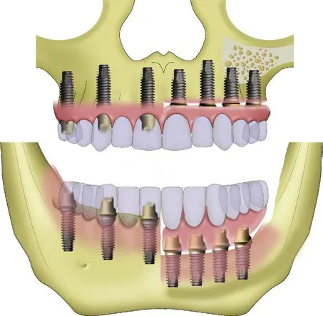
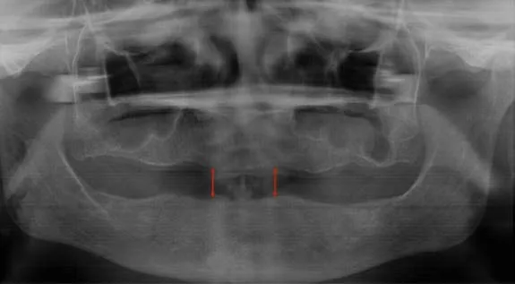

نسخه استخراجشده؛ ترجمه یا تأیید علمی انجام نشده است. وضعیت: captured
یکی از تصمیمهای بنیادی این است که پروتز نهایی چه نوعی خواهد بود، چون این انتخاب مستقیماً تعداد، موقعیت و حتی امکانپذیری کاشت را تعیین میکند.
پروتزها به دو خانواده تقسیم میشوند: ثابت (FP) و متحرک (RP). و درون خانوادهی ثابت، تفاوت اصلی در این است که پروتز چقدر از ساختار از دست رفته را جایگزین میکند:
FP-1 فقط تاج را جایگزین میکند — یعنی نیاز به ابعاد نزدیک به آناتومی طبیعی دارد. FP-2 تاج و بخشی از ریشه را، با تاج بالینی بلندتر. FP-3 تاج و بخشی از بافت نرم را، معمولاً با پرسلن صورتی.
چرا این تقسیمبندی برای جراح مهم است؟ چون هر انتخاب، تحمل متفاوتی نسبت به موقعیت ایمپلنت دارد. یک ایمپلنت که برای FP-1 بیشازحد اپیکالی کاشته شده، همان ایمپلنت برای FP-2 پذیرفتنی است — ولی این تصمیم باید پیش از جراحی گرفته شده باشد، نه پس از دیدن نتیجه.
و در همان ریج Division B، دو مسیر کاملاً متفاوت مطرح است: ایمپلنت باریک با پروتز نزدیک به ابعاد آناتومیک (FP-1)، یا استئوپلاستی و ایمپلنت Division A با تاج بلندتر (FP-2 یا FP-3). جراحی این دو مسیر یکی نیست.

فضای ارتفاع تاجی فقط یک عدد بیومکانیکی نیست؛ نوع پروتز را هم تعیین میکند — و در نتیجه برنامهی جراحی را.
در استخوان Division C با CHS بیش از ۱۵ میلیمتر، پروتز ثابت اغلب یک هیبرید است: دندانهای دنچر روی زیرساخت فلزی با رزین آکریلی. در Division D با فضای بیش از ۲۰ میلیمتر، گزینهی ثابت معمولاً FP-3 است و گزینهی متحرک بهدلیل همان CHS زیاد، ایدهآل RP-5.
در سمت دیگر طیف: وقتی پروتز نهایی اوردنچر است، رایجترین رویکرد در ریج Division B استئوپلاستی است؛ اگر ارتفاع ریج طوری کاهش یابد که CHS کمتر از ۱۵ میلیمتر شود و عرض بیش از ۶ میلیمتر باشد، شرایط برای RP-4 یا RP-5 مساعد است.
و برای پروتز متحرک با CHS بیش از ۱۵ میلیمتر، دو توصیهی طراحی مهم است: طول کانتیلور کاهش یابد و سازوکار تسکین تنش در طرح گنجانده شود.
جمعبندی این درس در یک جمله: جراح که نداند پروتز نهایی چیست، در واقع نمیداند ایمپلنت را کجا و چند تا باید بکارد. طرح پروتزی، ورودی جراحی است.
